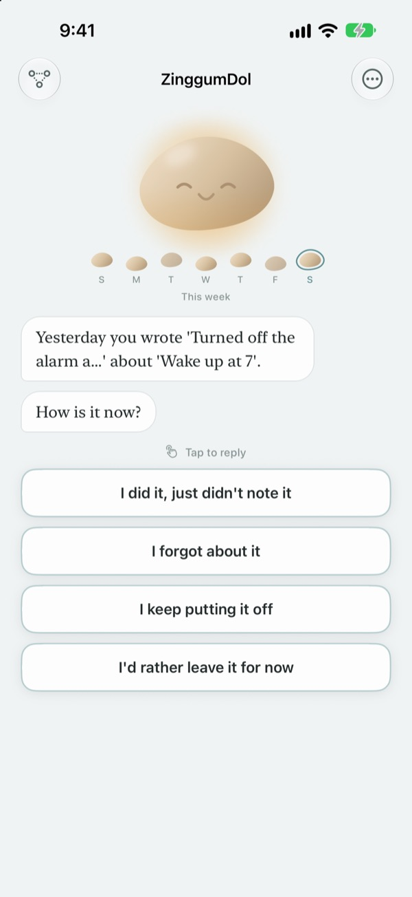
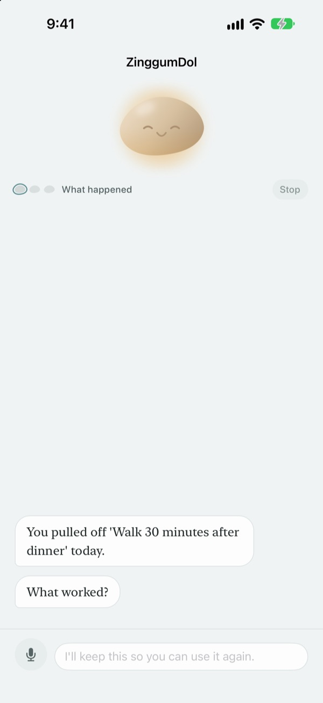
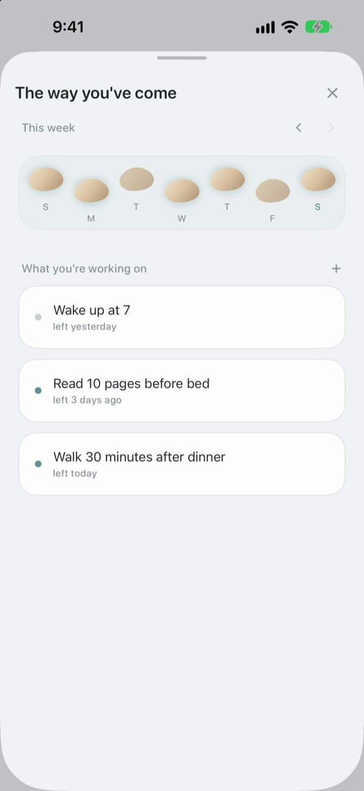
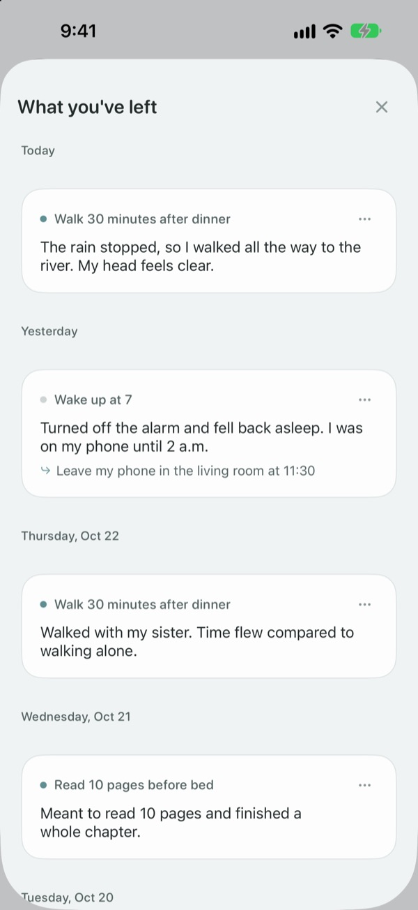

Missing a step
doesn't mean you fell in
On a day you miss your goal, the pebble speaks first. It asks what happened, not what you did wrong, then hands back the facts and your feelings as two separate things.
Talking, journaling and your path are free. No sign-up, no ads.

Talk to the pebble
You meant to go for an evening walk today and didn't. Tap a reply or type your own, and the pebble answers just as it does in the app.
When a day doesn't go to plan, do you blame yourself?
On a night you skipped the workout, the first thought is usually "what's wrong with me?" Look closer and there was a late shift, it was raining, you were worn out. ZinggumDol asks about what happened and how you feel in separate turns, then lays the two side by side. Once you see it was the circumstances and not your willpower, the next small step gets easier to find.
The pebble speaks first
Set a goal and the pebble keeps track of the days you made it and the days you got stuck. When a day slips by, it asks "what happened?" instead of "why didn't you?", and it remembers what you told it last time so it can ask how things went since.
On days when writing feels like too much, just say it. Speech is recognized on your device and recordings are never saved.

Your days laid out as stepping stones
Each week is a row of stepping stones. The days you missed stay there too; nothing gets wiped away.
Even with a gap or two, you can see the path still carries on.

Come back to what you wrote
What happened, how you felt and what you'll try next pile up in date order. Look back at a day you got stuck in the same way and you'll see what worked.
A Home Screen widget shows a word from the pebble, and a reminder at a time you pick nudges you to look back on the day.

Three steps to start
- 1
Write down one goal
Something like "Walk 30 minutes after dinner".
- 2
Open the app at the end of the day
The pebble asks how today went. Set a reminder so you don't forget.
- 3
Tap or type a reply
You can stop any time with
I'd rather leave it for now.
How a conversation goes
- What happened
- Just the facts of what got in the way
- Feeling
- Pick how you feel right now from five steps
- Looking back
- The pebble hands back what happened and how you feel, kept apart
- Next step
- You choose something small, five minutes is plenty
- Wrap-up
- On a really low day it asks nothing more and suggests a rest
You can leave at any point, and whatever you've said so far is kept.
Talking and journaling are free. Pro is there if you want more.
Free
- Every conversation with the pebble
- Up to three goals
- Speak instead of typing
- Your path and everything you've written
- Home Screen widget and daily reminders
- Passcode lock
ZinggumDol Pro
- As many goals as you like
- Choose from six pebble finishes
- Export your records as a text file
Buy once, keep it. Not a subscription.
No payment screen ever pops up in the middle of a conversation. On a new device or after reinstalling, tap Restore Purchase in Settings.
Questions
Do I have to explain every missed day?
No. Tap I'd rather leave it for now at any point and the conversation ends right there. What you've said so far is kept, so you can pick it up later.
I actually did it, but the app says I didn't.
Tap I did it, just didn't log it. The pebble takes the correction and asks what helped instead. What worked gets saved, and it brings it back the next time you get stuck.
Where does what I say out loud go?
Your speech is turned into text on your device and the recording is never saved. On supported devices your words are tidied up so they read more easily, and that happens on the device too.
How many goals can I have?
Three for free. When you're done with one, use Set Down in The way you've come to free up a spot. For more than three, you'll need ZinggumDol Pro.
Is ZinggumDol Pro a subscription?
No. You pay once and keep it. On a new device or after reinstalling, tap Restore Purchase in Settings.
Can anyone else read my journal?
There's no account. Your records live only on your device and in your own iCloud, and you can lock the app with a passcode in Settings. What you write is never sent to the developer. You can also turn off anonymous usage statistics in Settings.
How do I change the reminder time?
Go to Daily reminders in Settings to turn them on or off and pick a time.
Does the pebble ever bring up my old wins?
Yes. When you mention something that worked before, the pebble remembers it, and on a hard day it reminds you of something you managed recently.
How do I delete everything?
Tap Delete All Records in Settings. Your goals and records are gone for good, including on other devices synced through iCloud. Your settings and purchases stay. With Pro, you can save a copy with Export records first.
How do I get in touch?
Use Send Feedback in the app's Settings, or email the address below.
Questions or feedback? Write to leeo@kakao.com.